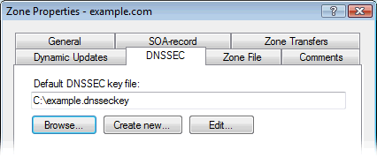
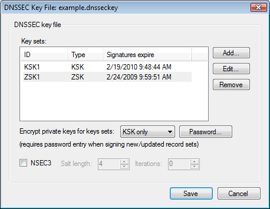
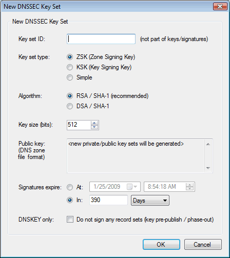

About DNSSEC key types:
RFC4641 (DNSSEC Operational Practices) defines two key types; "Key Signing Key" (KSK) and "Zone Signing Key" (ZSK).
Typically a zone is signed with both a KSK and a ZSK.
KSKs only sign the public key records (DNSKEY) for a zone, and usually have a long validity period (like 13 months).
KSKs are used as "Secure Entry Points" (SEP), and are referenced in parents zones through a delegation signature (DS-record).
ZSKs sign all the record sets in a zone, and usually have a shorter validity period (like 1 month).
ZSKs are not Secure Entry Points, and are not referenced directly in parent zones.
This setup allows a zone operator to change his keys (ZSKs) more frequently without having to update the delegation signature in the parent zone.
Note that when the signatures for either of these keys are about to expire, new keys and signatures must be added, so that in overlapping periods a zone might be signed by 3 or 4 different keys at the same time.
Simple DNS Plus also supports a 3rd key type - "Simple".
This is basically a combined KSK and ZSK - a key used as a Secure Entry Point and also to sign all record sets in a zone.
This is just a simpler model which may be easier to use in some scenarios - but of course doesn't provide the benefits of KSK/ZSK separation.
About DNSSEC key files:
When signing a zone (see reference articles below), Simple DNS Plus uses a "DNSSEC key file" containing the private/public key sets and various other options needed when signing.
Keeping this information in a separate file makes it easy to re-use the same keys for several zones, and it allows you to store keys off-line (as per the DNSSEC RFC recommendations), for example on a USB flash drive or floppy disk.
The DNSSEC key file format used by Simple DNS Plus is proprietary and cannot be used directly with other DNSSEC programs/tools - there is no standard specification for this.
However the file format is XML based and very simple. You can examine it with notepad or an XML file editor.
Managing DNSSEC keys and key files:
You can specify a default DNSSEC key file for a zone in the Zone Properties dialog / DNSSEC tab:

Creating or editing a DNSSEC key file (by clicking the "Create new" / "Edit" buttons either in the Zone Properties dialog / DNSSEC tab, or in the DNSSEC Sign Zone dialog), brings up the "DNSSEC Key File" dialog where you can edit individual key sets and specify other signing options:

DNSSEC key file dialog details:
When you add / edit a key set, the details are specified in the DNSSEC Key Set dialog:

DNSSEC Key Set dialog details: